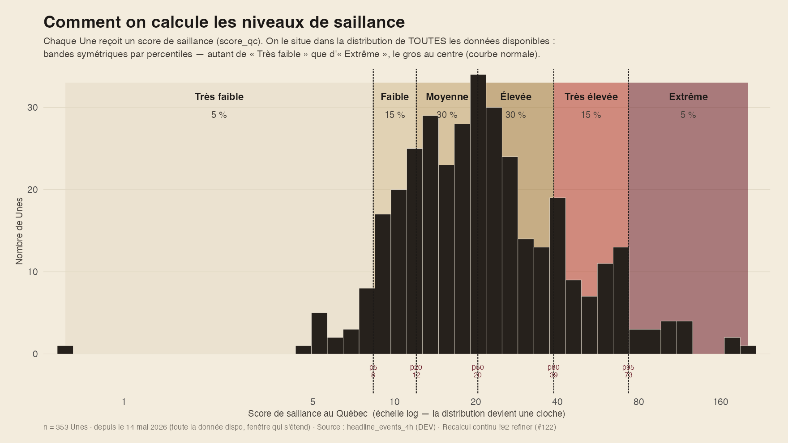

§ 03
La saillance est mesurée en blocs de quatre heures ancrés sur l'heure de Montréal (03–07 h, 07–11 h, 11–15 h, 15–19 h, 19–23 h, 23–03 h), qui constituent l'unité temporelle de base de l'analyse. L'ancrage sur l'heure locale plutôt que sur UTC garantit qu'un bloc reste la même tranche de journée toute l'année, y compris aux changements d'heure.
Une nouvelle peut s'imposer de trois manières différentes, et l'indice les mesure séparément avant de les combiner. Chacune est ramenée sur une échelle de 0 à 1.
| Facette | Question | Mesure |
|---|---|---|
| Visibilité | Combien de médias en ont fait leur Une? | Part des médias suivis de la région qui ont mis l'histoire en Une, en plus du premier. |
| Intensité | Chaque média y consacre-t-il un article ou plusieurs? | Nombre moyen d'articles par média couvrant l'histoire. Un même média ne compte que jusqu'à trois articles : au-delà, un site qui décline abondamment un sujet gonflerait la mesure sans que l'histoire occupe plus de place ailleurs. |
| Durée | Combien de temps est-elle restée en Une? | Temps passé en Une, rapporté au rythme habituel de chaque média : une heure sur une page frontale renouvelée en continu ne vaut pas une heure sur une page qui change deux fois par jour. |
Les trois facettes sont réunies par une moyenne géométrique, et non par une addition. La différence est de fond : une addition serait compensatoire, c'est-à-dire qu'une facette très forte pourrait masquer une facette absente. Un seul média qui laisserait un sujet toute la journée en Une obtiendrait alors un score élevé, alors qu'aucun autre média ne l'a jugé digne de sa page frontale. La moyenne géométrique refuse cette compensation : une histoire doit exister sur les trois plans à la fois pour monter, et le plus faible des trois tire l'ensemble vers le bas. Un plancher empêche toutefois qu'une facette nulle annule tout le reste.
L'indice est calculé séparément pour chaque région — les médias québécois d'un côté, les médias canadiens de l'autre — parce qu'une histoire ne se compare qu'aux Unes du même ensemble de médias. C'est ce qui permet au module « Deux solitudes ? » de situer chaque camp chez lui plutôt que dans un panier commun.
Le résultat vaut entre 0 et 1 ; il est affiché sur 100, avec une décimale.
Toutes les nouvelles présentées dans le module « La Une des Unes » ont fait la Une d'au moins un média : elles sont déjà saillantes. L'étiquette de saillance ne dit donc pas si une nouvelle est importante, mais où elle se situe parmi les autres Unes. Ce qui est classé est l'attention cumulée sur 24 heures, les heures récentes comptant davantage — la même grandeur qui détermine l'ordre des manchettes, de sorte que le niveau affiché et le rang racontent la même chose. Cette valeur est comparée à la distribution des mêmes cumuls sur toutes les Unes récentes, puis classée en six niveaux par percentiles symétriques.
| Niveau | Position (percentile de l'attention cumulée 24 h) | Part des Unes |
|---|---|---|
| Très faible | sous le 5e percentile | 5 % |
| Faible | du 5e au 20e percentile | 15 % |
| Modérée | du 20e au 50e percentile | 30 % |
| Élevée | du 50e au 80e percentile | 30 % |
| Très élevée | du 80e au 95e percentile | 15 % |
| Exceptionnelle | au-dessus du 95e percentile | 5 % |
Les bandes sont symétriques : autant de « Très faible » que d'« Exceptionnelle », l'essentiel au centre. La médiane tombe entre « Modérée » et « Élevée », de sorte qu'aucune bande ne représente « la moyenne ». Les seuils sont recalculés à chaque mise à jour sur l'historique récent disponible, de sorte qu'« habituel » suit l'évolution réelle de l'actualité plutôt qu'une saison figée ; à défaut, on retombe sur des seuils de référence fixes. Lorsque la façon de mesurer la saillance change, cet historique de référence repart de ce changement.
Cette référence est provisoire, et il faut le savoir pour lire les niveaux. Parce qu'elle se recalcule sur l'historique disponible, une même valeur peut changer d'étiquette lorsque la distribution bouge sous elle : un niveau publié aujourd'hui se rapporte à la distribution du moment, et non à une référence datée. L'indice lui-même, lui, ne bouge pas — il est absolu par construction, et deux valeurs égales mesurent la même chose quelle que soit l'année. C'est la lentille qui est encore mobile, pas l'instrument. Une référence figée sur une année complète, datée et versionnée, est à l'étude pour y remédier. Le jour où elle sera posée, le changement sera annoncé : ou bien les niveaux déjà publiés resteront rattachés à la référence sous laquelle ils ont été calculés, ou bien tout sera recalculé sous la nouvelle et ce sera dit. Jamais un mélange des deux, et jamais en silence.
Une propriété mérite d'être signalée, parce qu'elle ne vient d'aucune règle ajoutée : une histoire portée par un seul média reste très bas sur l'échelle. La facette Visibilité y est presque nulle, et comme les trois facettes se multiplient au lieu de s'additionner, aucune des deux autres ne peut compenser — ni le nombre d'articles, ni le temps passé en Une. C'est la traduction d'un principe simple : la saillance décrit une attention collective, et un média seul, aussi insistant soit-il, ne fait pas un agenda. Sur toute la période observée, la plus forte histoire de ce type est restée nettement sous le niveau « Élevée ». Ce plafond est un constat de mesure et non une impossibilité : un média qui garderait seul une histoire en Une sans interruption pendant vingt-quatre heures pourrait en théorie le franchir. Ce cas ne s'est jamais présenté, et cette vérification est refaite à chaque recalibration.
